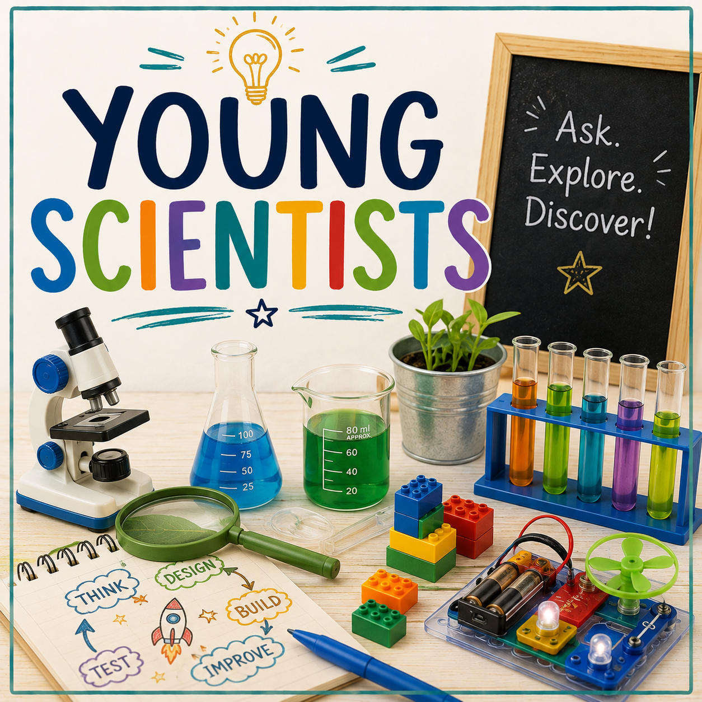
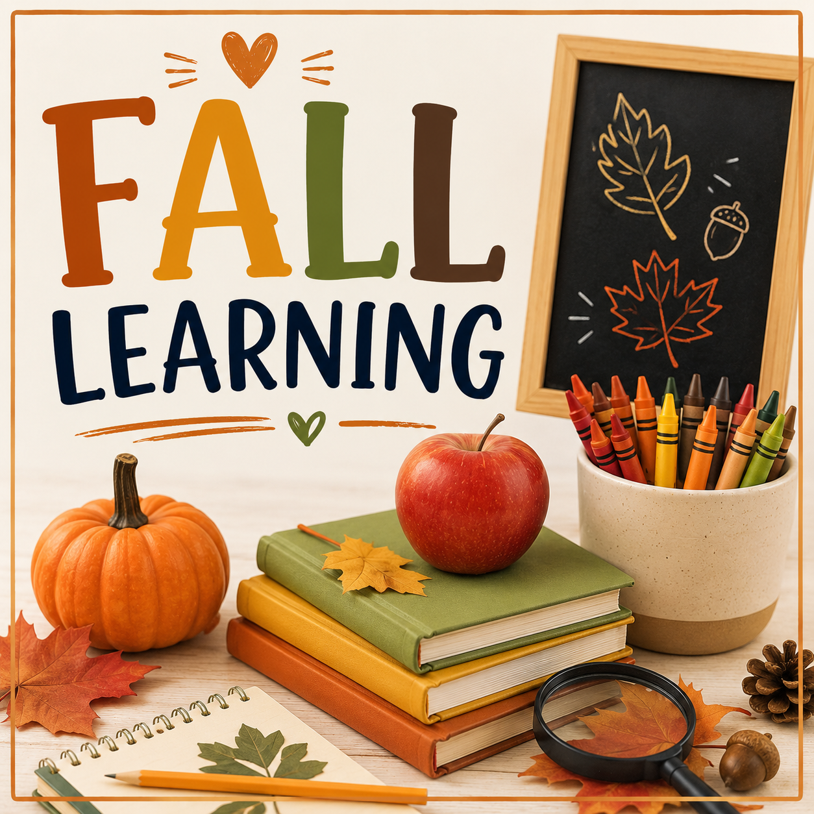

Nature
Nature Explorers
Children investigate plants, animals, rocks, and natural materials through outdoor discovery.
Outdoor activities encourage children to explore nature, develop physical skills, investigate science concepts, and build confidence through hands-on experiences.

Outdoor learning gives children opportunities to explore, observe, investigate, and connect with the natural world. Through outdoor play and discovery, children strengthen physical development, curiosity, creativity, and problem solving.
Hands-on outdoor experiences that encourage children to explore nature, investigate, move, and discover.
Children investigate plants, animals, rocks, and natural materials through outdoor discovery.

Children observe, predict, compare, and explore the world through outdoor science experiences.

Children learn about plants, growth, responsibility, and caring for living things.

Children build strength, coordination, and confidence through outdoor movement.
Create meaningful learning experiences outside the classroom.
Plants, animals, rocks, and natural discoveries.
Observation, experiments, and investigations.
Planting, caring, and learning from nature.
Running, climbing, balancing, and active play.
Observe seasons, temperature, and changes.
Create using natural materials and outdoor inspiration.
Simple outdoor experiences that encourage curiosity and active learning.
Children search for leaves, rocks, insects, and natural objects while practicing observation skills.
Children explore shadows, light, and movement while making observations.
Children observe plants, record changes, and care for classroom gardens.
Children climb, jump, balance, and move through outdoor challenges.
Outdoor experiences support curiosity, physical development, science learning, creativity, and connections with the natural world.
Children observe plants, animals, weather, and natural changes through exploration.
Children ask questions, make predictions, and investigate the world around them.
Children strengthen balance, coordination, strength, and movement skills.
Children learn to care for nature, plants, animals, and shared spaces.
Create outdoor experiences where children explore, question, and learn through discovery.
Ask children what they notice, hear, feel, and discover outdoors.
Encourage children to wonder, predict, and explain their ideas.
Provide opportunities to explore leaves, rocks, sticks, water, and soil.
Give children time to investigate and follow their interests.
Choose outdoor experiences that match children's developmental needs.
Nature walks, sensory exploration, and movement experiences.
Explore →Collecting objects, water play, and simple investigations.
Explore →Nature science, gardening, and creative outdoor play.
Explore →Experiments, problem solving, and environmental learning.
Explore →Outdoor activities support approaches to learning, cognitive development, physical development, language growth, science exploration, and social emotional development.